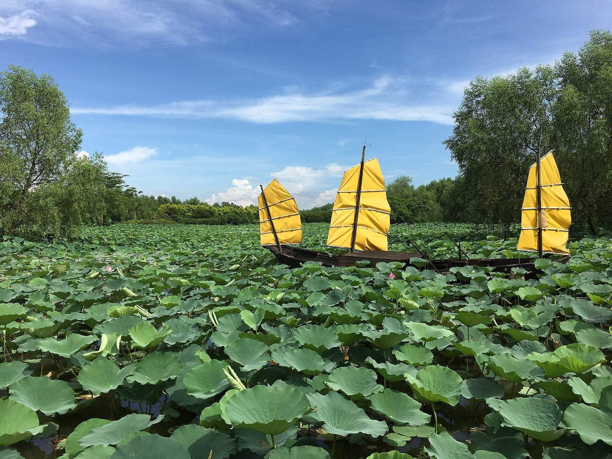
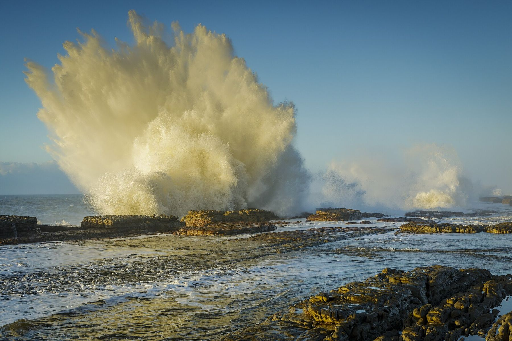

الرئيسية / عن الشركة
الشركة
شركة في نانشا تمارس الاستزراع المائي الدائري.
الاسم القانوني هو Guangzhou Nansha Zhihui Agricultural Technology Co., Ltd.（广州南沙智汇农业科技有限公司）. أمّا الاسم التجاري العلني المختصر على هذا الموقع فهو بان بان أكوا (PanPan Aqua).
تأسست الشركة في تموز/يوليو 2020، وفق ما ورد في تقارير صحفية نُشرت عند إطلاق منتج تشيوهاو في أيلول/سبتمبر 2026. وتصف تلك التقارير الشركة بأنها شركة تابعة مملوكة بالكامل لشركة مجموعة صناعة الزراعة الحديثة في نانشا بقوانغتشو ذات المسؤولية المحدودة.
أُعيدت هيكلة المجموعة الأم في آب/أغسطس 2021. ويصف موقع حكومة منطقة نانشا المجموعة الأم بأنها مجموعة مملوكة للدولة على مستوى المنطقة، شُكّلت تحت لجنة إدارة منطقة تنمية نانشا في قوانغتشو، ويذكر أنها اعتُمدت في عام 2025 مؤسسةً وطنية رائدة في التصنيع الزراعي.
تشمل الأوصاف العلنية لأعمال تشي هوي تشغيل الاستزراع المائي الدائري في المصنع، والاستزراع بالتناوب مع الأحواض الخارجية، وتطوير الحدائق الزراعية الحديثة وتشغيلها. والشركة هي جهة بناء وادي الزراعة في منطقة الخليج (湾区农谷) وتشغيله.
وادي الزراعة في منطقة الخليج
حديقة فيها ورشة قيد التشغيل، ومبانٍ بحثية ما تزال تُشيَّد.
رمز المشروع هو 2302-440115-04-01-418726. تبلغ مساحة الأرض التخطيطية نحو 34,104 مترًا مربعًا. ويبلغ إجمالي الاستثمار المنشور نحو 853.1296 مليون رنمينبي. وكثيرًا ما تكتب التقارير الصينية هذا الرقم بنحو 8.53 يي يوان (8.53 × 100 مليون). ويُترجَم أحيانًا في الإنجليزية بشكل فضفاض إلى 8.5 مليار يوان، وهو تحويل غير دقيق. يغطي الرقم مشروع الحديقة ككل، بما فيه المباني، ولا يجوز اعتباره ناتج مصنع تجاري كبير للأسماك.
| البند | الرقم المنشور | كيف يُقرأ |
|---|---|---|
| المساحة المبنية في المرحلة الأولى | 19,548 م² | تشمل ورشة المصنع الذكي للاستزراع السمكي النباتي قيد التشغيل أصلًا. |
| مساحة المباني المخططة للمرحلة الثانية | نحو 72,050 م² | مبانٍ للمنشآت البحثية والثقافية، وليست بيانًا لطاقة إنتاج الأسماك. |
| حجم التربية التجريبية السنوي المصمَّم | نحو 100 ألف جين (حوالي 50 طنًا) | من اعتماد مكتب البيئة والبيئة الإيكولوجية في قوانغتشو بتاريخ 2 شباط/فبراير 2026. |
| رخصة تخطيط المبنى 3 | صدرت في 5 كانون الأول/ديسمبر 2025 | رخصة تخطيط بناء لمبنى دعم بحثي وقبو، صادرة للشركة. |
الجدول الزمني العلني
تواريخ تظهر في السجل العلني.
- تموز/يوليو 2020 تأسيس الشركة، وفق ما ورد لاحقًا في التقارير الصحفية.
- آب/أغسطس 2021 إعادة هيكلة المجموعة الأم كمجموعة مملوكة للدولة على مستوى منطقة نانشا.
- 28 كانون الأول/ديسمبر 2023 افتتاح المرحلة الأولى من حديقة نانشا التجريبية للزراعة الحضرية، وإقامة حفل إسكان للمصنع الذكي للاستزراع السمكي النباتي. وأُبلغ في المناسبة نفسها عن لوحة لفريق الأكاديمي ليو شاوجون وعن اتفاق إطاري مع شركة يويه لو شان.
- 1 تموز/يوليو 2024 مناقصة علنية لدعم بحثي في تربية سمك الماندرين (Siniperca، 鳜鱼) ضمن نظم الاستزراع الدائري.
- 21 شباط/فبراير 2025 مناقصة علنية لمنشأة إعادة تدوير مياه صرف الاستزراع في الحديقة.
- 5 كانون الأول/ديسمبر 2025 إصدار رخصة تخطيط البناء للمبنى 3 في وادي الزراعة في منطقة الخليج.
- 2 شباط/فبراير 2026 اعتماد تقييم الأثر البيئي للمشروع، ووصف تربية تجريبية بنحو 50 طنًا سنويًا.
- 10 أيلول/سبتمبر 2026 إطلاق تشيوهاو 5 وتشيوهاو 8 في الدورة الثانية عشرة لمعرض قوانغتشو الدولي لمصايد الأسماك، مع الإعلان عن استقطاب موزّعين داخل الصين.


ظهر عنوان مراسلة إضافي هو 162 طريق تشوجيانغ الشمالي في بعض المناقصات اللاحقة. يُذكر هنا بوصفه عنوانًا ورد في تلك الوثائق. ولا يعامل هذا الموقع أيًا من العنوانين على أنه مقر رئيسي مؤكد بما يتجاوز ما تظهره تلك الوثائق.